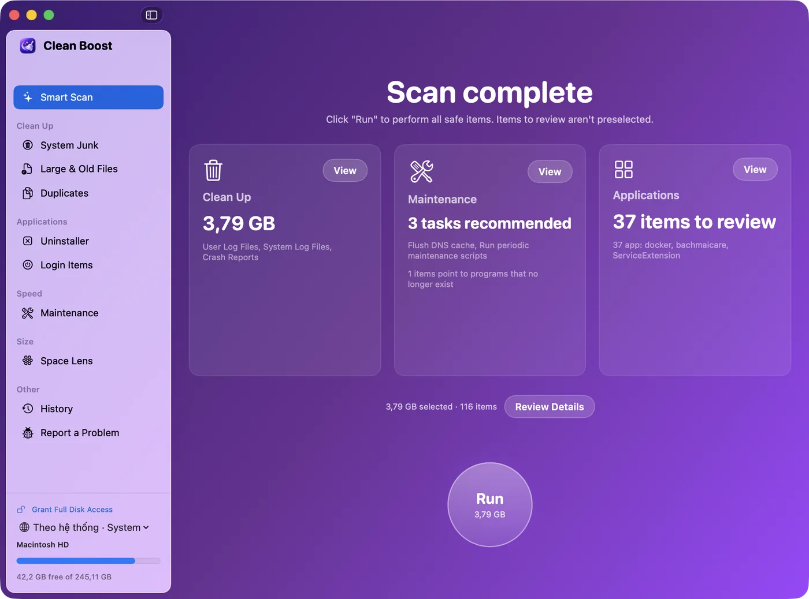
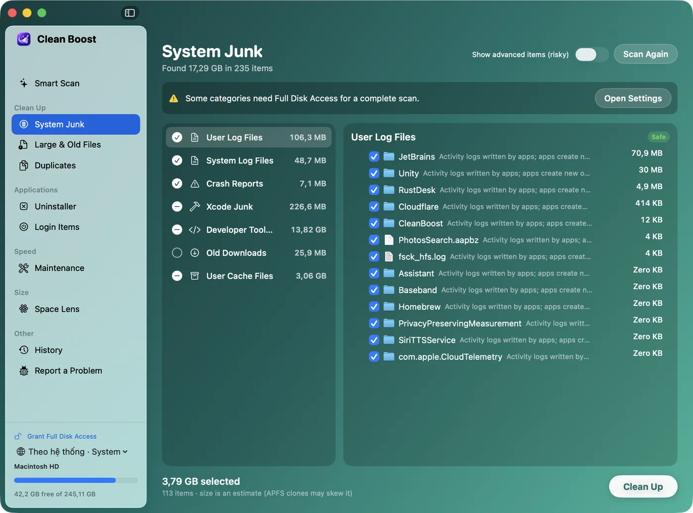
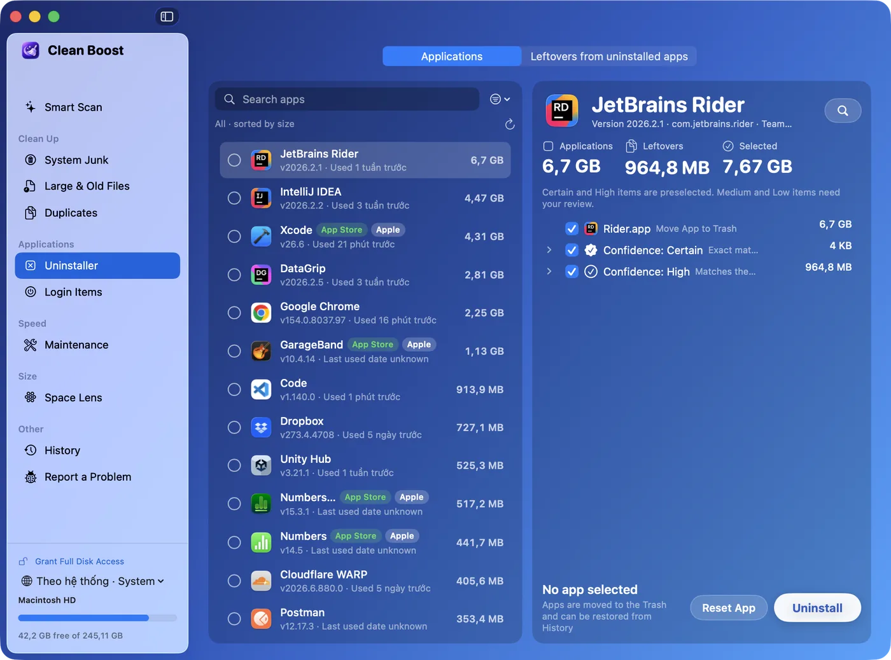
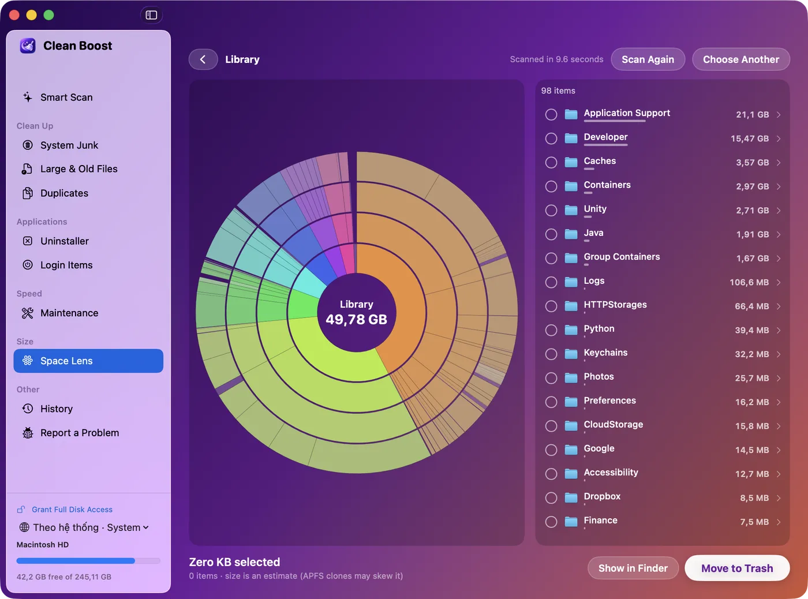

Safe
Caches and logs that apps rebuild on their own, like Xcode DerivedData or npm downloads.
Selected automatically
Clean Boost finds caches, logs, app leftovers and forgotten files, and tells you what each one is, which app it belongs to, and why it's safe to remove.
Free · macOS 13 or later · Apple Silicon and Intel
Each item carries a level. Only safe items are selected for you; everything else waits for your decision.
Caches and logs that apps rebuild on their own, like Xcode DerivedData or npm downloads.
Selected automatically
Things you might still want: old installers, large downloads, Mail attachments.
Never selected for you
Data that could be your only copy, such as iPhone backups or language files inside apps.
Shown with a clear warning




Files you created are never deleted outright. They go to the Trash, and History can restore them for 90 days.
Caches, logs, crash reports, old iOS installers and the Trash, including on external drives.
Removes apps with their support files, matched by bundle ID, team and name, ranked by confidence.
An interactive map of your disk. Click any ring to drill into a folder.
Compares size, then a fast hash, then a full checksum, and suggests which copy to keep.
Find big files you haven't opened in a year, filtered by type, size and last use.
CPU, memory, network and free space at a glance, with an alert when the disk is almost full.
Xcode, simulators, npm, yarn, pnpm, Homebrew, pip, Gradle, CocoaPods and Docker caches.
Nothing leaves your Mac unless you opt in. No tracking SDKs, no file names ever sent.
The Mac App Store version runs in Apple's sandbox, so it only cleans folders you give it access to. The direct download can clean system-wide.
| Mac App Store | Direct download | |
|---|---|---|
| Updates | Through the App Store | Built-in updater |
| Cleans | Your Home and Applications folders | Your Mac, including system caches |
| Uninstaller, Space Lens, duplicates | Included | Included |
| Login items, maintenance tasks | Not available in the sandbox | Included |